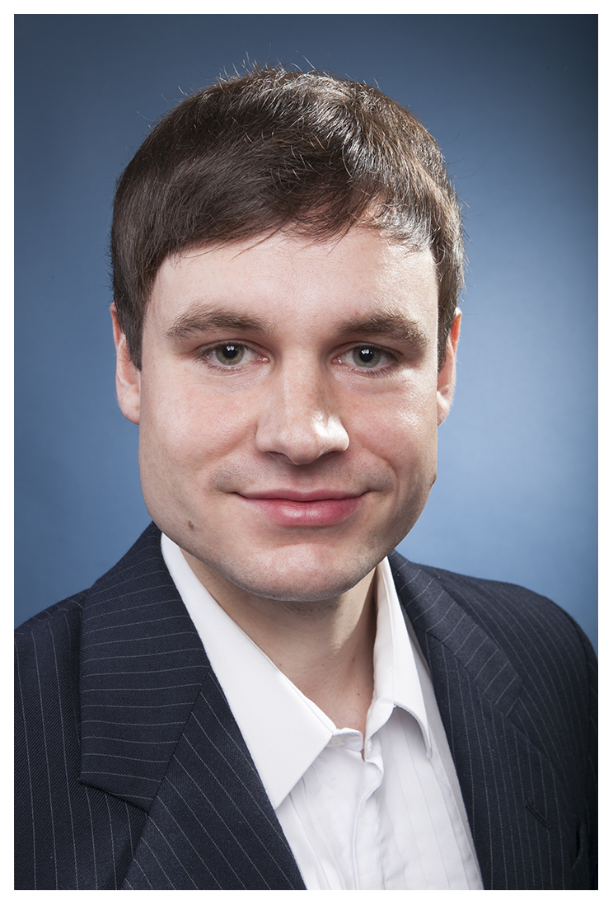
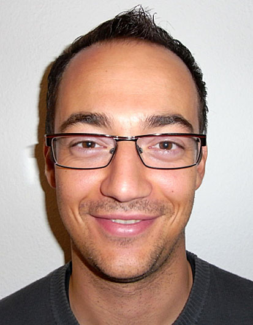

|  |  |
| Andre Weiner | Tomislav Marić |
| a.weiner@tu-braunschweig.de | maric@mma.tu-darmstadt.de |
OpenFOAM-v2206 release webinar
What data-driven entails:
Short term goals:
Long term goals:
Current SIG structure (July 2022):
Refer to the wiki for a detailed list.
Communication channels:
OF workshop training contributions:
Recordings will be available on the Journal's
Youtube channel.
Idea: solve $||\nabla \psi|| = 1$ using a PINN.
Idea: analyze coherent structures using DMD.
Reconstruction of main vortex shedding mode.
Reconstruction of high-frequency vortex shedding mode.
OpenFOAM-ML hackathon:
Lecture on ML in CFD at TU Braunschweig: